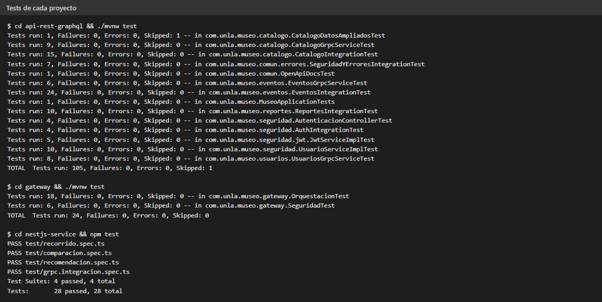
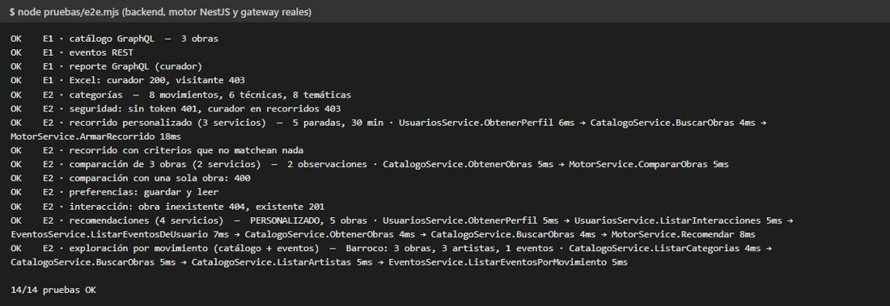
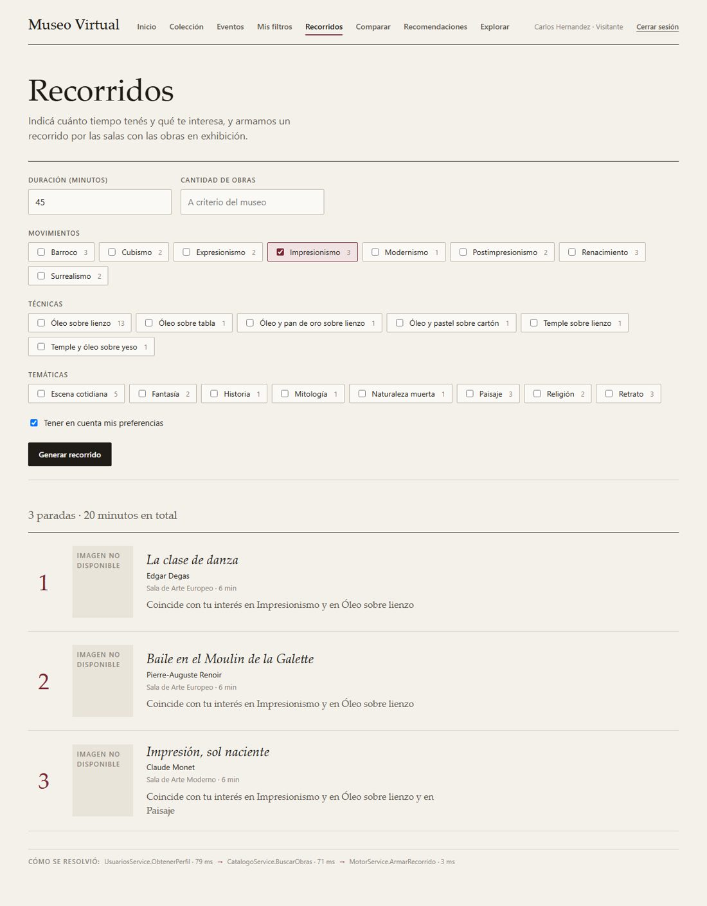
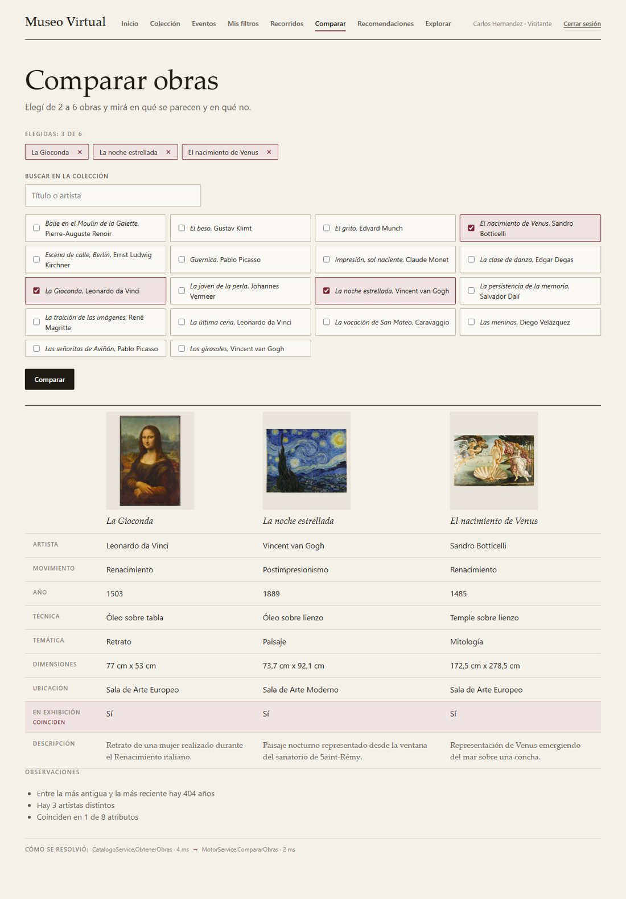
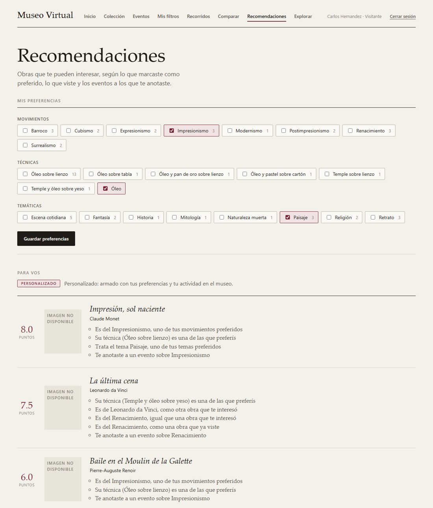
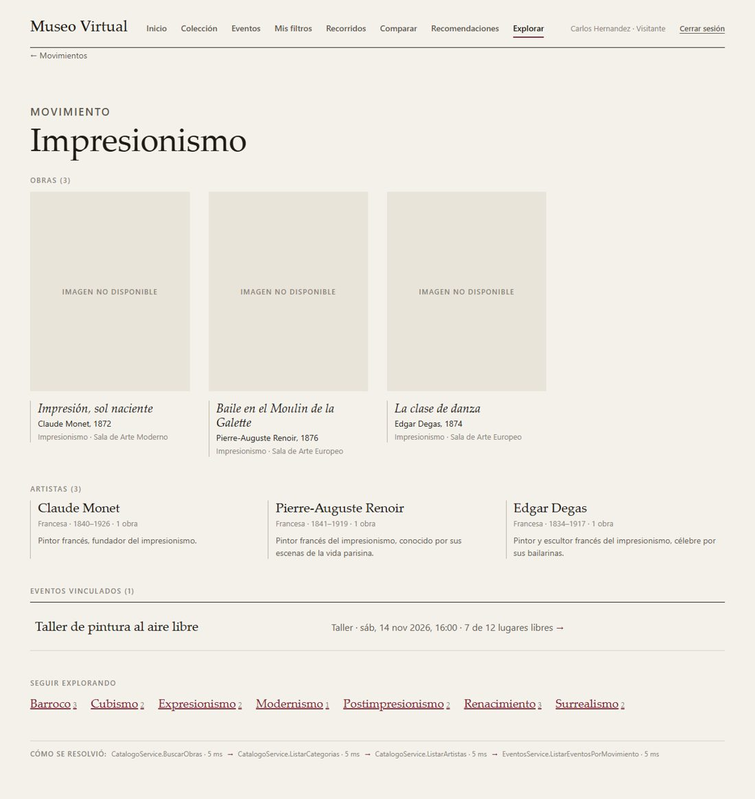
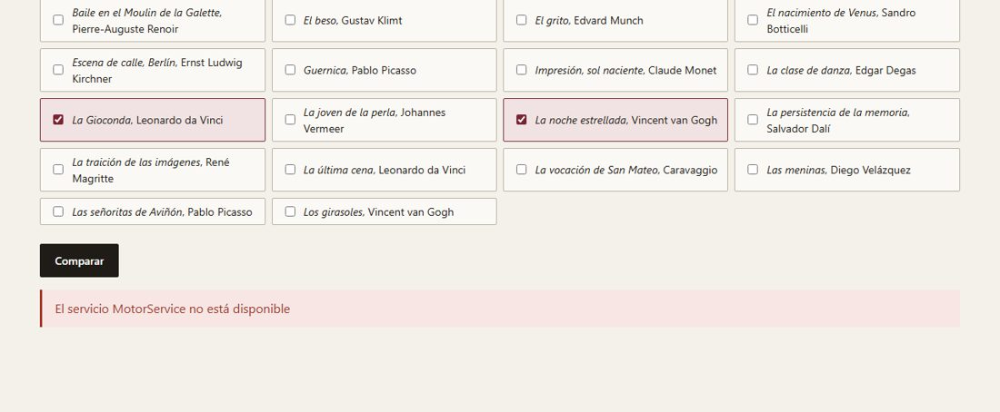
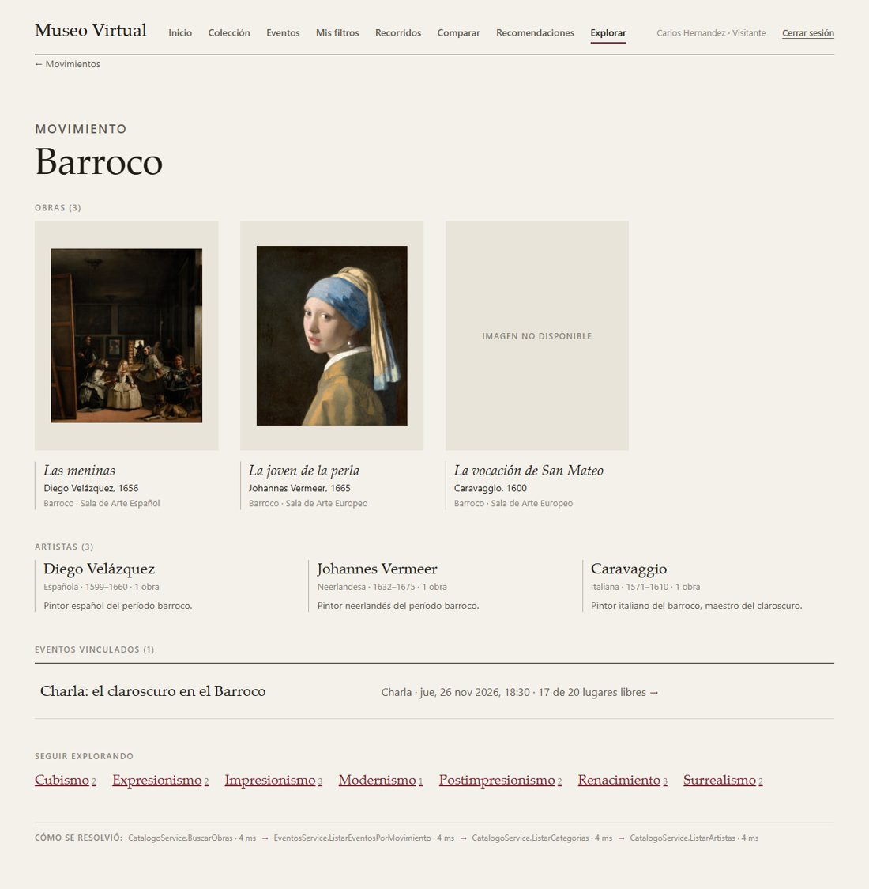
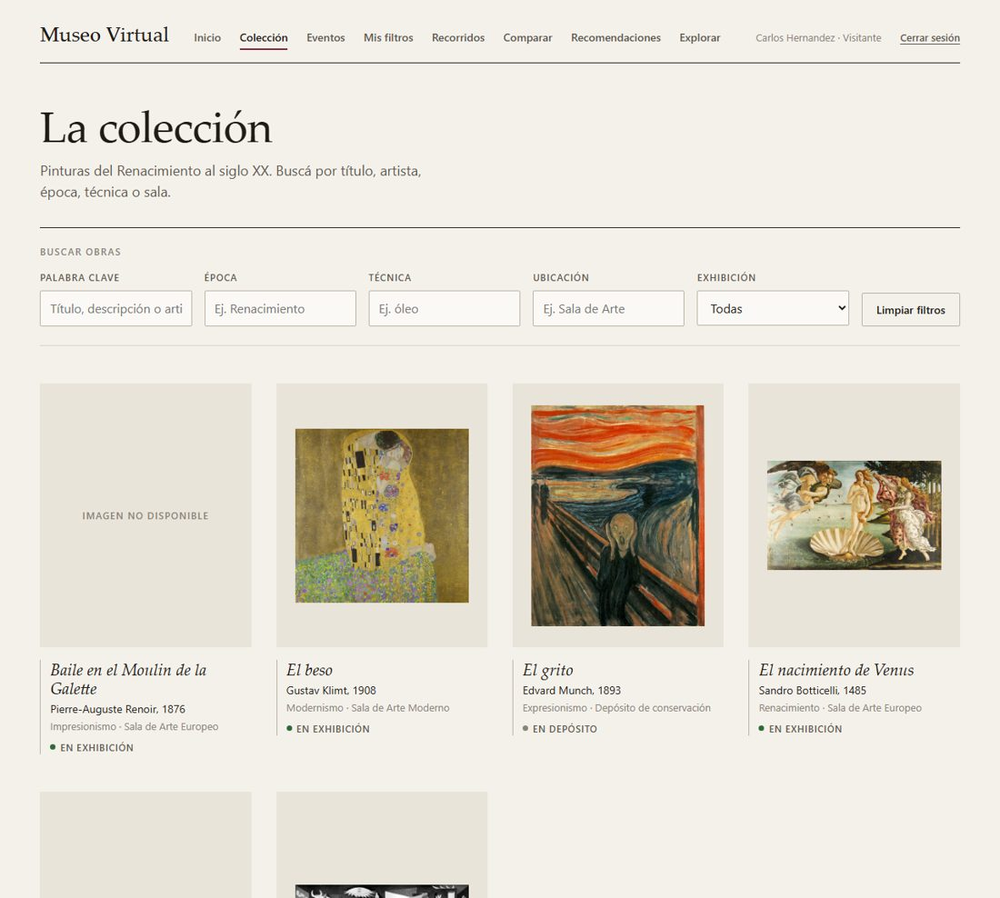
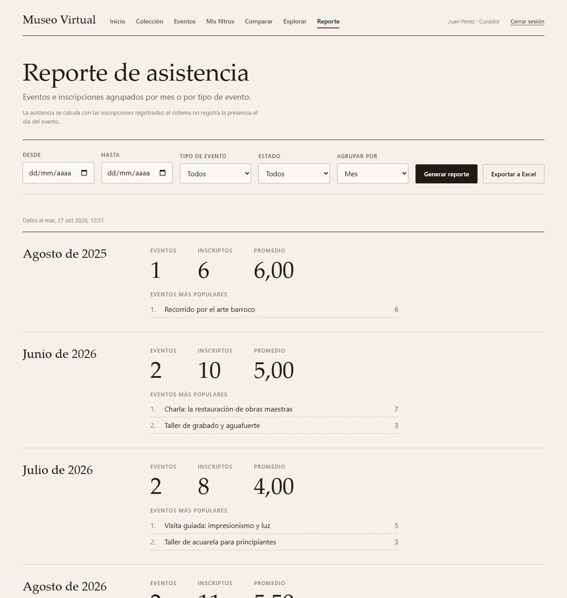

DEPARTAMENTO DE DESARROLLO
PRODUCTIVO Y TECNOLÓGICO
LICENCIATURA EN SISTEMAS
Museo Virtual Interactivo
Segunda entrega: Llamado a Procedimiento Remoto (RPC) con gRPC
| Asignatura: | Desarrollo de Software en Sistemas Distribuidos |
| Docente a cargo: | Diego Andrés Azcurra |
| Docente: | Julián Tomczak |
| Día y horario de cursada: | Miércoles 8 a 14 hs. |
| Año de cursada: | 2026 |
| Alumnos: | Luciano Aizar Assefh Tomas Alejandro Diaz De Maio Franco Nordinelli Francisco Ian Patejim |
| Grupo: | A |
| Fecha de entrega: | 27/10/2026 |
La Entrega 1 queda tal como estaba: el frontend React sigue usando el backend Spring Boot por REST y GraphQL, con el mismo JWT, para el catálogo, los eventos, el reporte, el Excel y la autenticación. No reemplazamos ni modificamos ninguno de esos casos de uso.
Las cuatro funcionalidades nuevas (recorridos personalizados, comparación de obras, recomendaciones y exploración por movimiento) entran por un componente nuevo, el API Gateway. El front le habla en REST con JSON y el mismo token; el gateway valida el token, identifica la operación y la resuelve llamando por gRPC a los servicios internos. Cada funcionalidad necesita datos de más de un servicio, y es el gateway el que decide a quién llamar, en qué orden (o en paralelo), le pasa a cada servicio lo que devolvió el anterior y arma una única respuesta.
Los servicios internos son cuatro:
El gateway no tiene base de datos ni reglas de negocio: no filtra, no puntúa, no ordena ni compara. Si mañana cambia cómo se elige un recorrido, se toca el motor y el gateway no se entera.
Servicios de dominio dentro del backend existente. En la Entrega 1 elegimos un backend modular en vez de microservicios, y lo justificamos. La consigna pide servicios de Obras, Usuarios y Eventos y permite organizarlos de otra manera si la separación de responsabilidades queda justificada. Lo que hicimos fue darle a cada módulo su propio servicio gRPC con su propio contrato: catalogo expone CatalogoService, eventos expone EventosService y el módulo de usuarios expone UsuariosService. Cada servicio solo usa los repositorios de su módulo: Usuarios, por ejemplo, guarda el id de la obra con la que interactuó el visitante pero no lee la tabla de obras, que es del catálogo; si hace falta validar que la obra existe, el gateway se lo pregunta a CatalogoService. Partirlos en tres procesos que comparten la misma base no les daba más independencia real y nos obligaba a tirar abajo lo que ya funcionaba.
Motor en otro proceso y otro lenguaje. Las reglas de los recorridos, las recomendaciones y las comparaciones son lo único realmente nuevo del dominio. Las pusimos en un servicio aparte, escrito en TypeScript con NestJS, que no depende de la base ni de los otros servicios: todo lo que necesita le llega en el pedido. Eso lo hace fácil de probar con datos armados a mano, y demuestra que el mismo contrato .proto funciona entre Java y TypeScript.
Un gateway que solo orquesta. La consigna pide que el gateway coordine las llamadas sin contener lógica de negocio ni acceder a las bases. Por eso cada operación del gateway es siempre la misma secuencia de llamadas, sin decisiones sobre el contenido: los criterios del visitante viajan tal cual al catálogo, y las preferencias al motor, que es el que decide qué priorizar.
Sin tocar la Entrega 1. Las funcionalidades nuevas usan rutas nuevas (/api/v2/... en el gateway) y servicios gRPC nuevos. El backend sigue respondiendo REST y GraphQL en el puerto 8000 exactamente igual, y los 81 tests de la Entrega 1 siguen pasando sin cambios.
| Funcionalidad | Entrega | Cómo se accede | Roles |
|---|---|---|---|
| Registro, login y perfil | 1 | REST · backend /api/auth | Todos |
| Catálogo y búsqueda de obras | 1 | GraphQL · backend /graphql | Todos |
| Eventos, inscripciones y filtros favoritos | 1 | REST · backend /api/eventos | Todos; ABM curador y administrador |
| Reporte de asistencia | 1 | GraphQL · backend | Curador y administrador |
| Exportación a Excel | 1 | REST · backend | Curador y administrador |
| Recorridos personalizados | 2 | REST · gateway /api/v2/recorridos → gRPC | Visitante |
| Comparación de obras | 2 | REST · gateway /api/v2/comparaciones → gRPC | Todos |
| Recomendaciones | 2 | REST · gateway /api/v2/recomendaciones → gRPC | Visitante |
| Exploración por movimiento | 2 | REST · gateway /api/v2/exploraciones/{movimiento} → gRPC | Todos |
| Componente | Responsabilidad |
|---|---|
| Aplicación web (React) | Pantallas. Las de la Entrega 1 le hablan al backend; las de la Entrega 2, solo al gateway. En cada resultado nuevo muestra las llamadas gRPC que hizo el gateway, para que se vea la coordinación. |
| API Gateway (Java, Spring WebFlux) | Punto de entrada de la Entrega 2. Valida el JWT y el rol, valida la forma del pedido, llama a los servicios por gRPC (en paralelo cuando no dependen entre sí), traduce los errores gRPC a HTTP y arma la respuesta. No tiene base ni reglas de negocio. |
| Backend Spring Boot | Todo lo de la Entrega 1 (REST y GraphQL) y, además, el servidor gRPC con los tres servicios de dominio. Es el único que accede a MariaDB. |
| Motor de experiencias (NestJS) | Reglas de negocio nuevas: armar recorridos, puntuar recomendaciones y comparar obras. Sin base: calcula con los datos que recibe. |
| MariaDB | Datos de todos los módulos. Cada tabla tiene un único módulo dueño (sección 5). |
Las flechas azules son el camino de la Entrega 2: el front llama al gateway, y el gateway llama por gRPC a los servicios del backend y al motor. El camino negro es el de la Entrega 1, que no cambió. La línea punteada marca que no existe conexión entre el gateway y la base.
Cada operación del gateway es una secuencia fija de llamadas gRPC. Cuando dos llamadas no dependen una de la otra, van en paralelo.
| Funcionalidad | Llamadas gRPC que hace el gateway |
|---|---|
| Recorrido personalizado | 1. UsuariosService.ObtenerPerfil (preferencias, si el visitante las quiere usar) 2. CatalogoService.BuscarObras (criterios del pedido, solo obras en exhibición) 3. MotorService.ArmarRecorrido (candidatas + duración + cantidad + preferencias) |
| Comparación de obras | 1. CatalogoService.ObtenerObras (2 a 6 obras) 2. MotorService.CompararObras |
| Recomendaciones | 1. En paralelo: UsuariosService.ObtenerPerfil, UsuariosService.ListarInteracciones y EventosService.ListarEventosDeUsuario 2. CatalogoService.BuscarObras (candidatas) y CatalogoService.ObtenerObras (obras con las que interactuó) 3. MotorService.Recomendar |
| Exploración por movimiento | En paralelo: CatalogoService.BuscarObras, CatalogoService.ListarArtistas, EventosService.ListarEventosPorMovimiento y CatalogoService.ListarCategorias. El gateway compone la respuesta con obras, artistas, eventos y otros movimientos para seguir navegando. |
| Responsabilidad | Punto de entrada de la Entrega 2: autenticación y autorización, validación de forma, orquestación de llamadas gRPC, traducción de errores y armado de la respuesta. |
|---|---|
| Operaciones | POST /api/v2/recorridos, POST /api/v2/comparaciones, GET /api/v2/recomendaciones, GET|PUT /api/v2/preferencias, POST /api/v2/interacciones, GET /api/v2/exploraciones/{movimiento}, GET /api/v2/categorias. Contrato completo en docs/contrato-api-gateway.md. |
| Información que administra | Ninguna. No tiene base de datos. |
| Se comunica con | Aplicación web (REST), CatalogoService, EventosService, UsuariosService y MotorService (gRPC). |
| Funcionalidades | Las cuatro. |
| Responsabilidad | Consultar obras y artistas para los casos de uso nuevos. La búsqueda de la Entrega 1 sigue por GraphQL. |
|---|---|
| Operaciones | BuscarObras (por movimientos, técnicas y temáticas, sin distinguir mayúsculas ni acentos), ObtenerObras (varias por id, en el orden pedido), ListarArtistas (con cantidad de obras), ListarCategorias (movimientos, técnicas y temáticas existentes). |
| Información que administra | Tablas obras, artistas (y comentarios, que usa solo GraphQL). |
| Se comunica con | Lo llama el gateway. No llama a otros servicios. |
| Funcionalidades | Las cuatro. |
| Responsabilidad | Consultar eventos vinculados a un movimiento y los eventos a los que se anotó un visitante. La gestión de eventos e inscripciones sigue por REST. |
|---|---|
| Operaciones | ListarEventosPorMovimiento, ListarEventosDeUsuario. |
| Información que administra | Tablas eventos e inscripciones. |
| Se comunica con | Lo llama el gateway. No llama a otros servicios. |
| Funcionalidades | Recomendaciones y exploración. |
| Responsabilidad | Perfil del visitante, sus preferencias y sus interacciones con las obras. Identifica al usuario por el email, que es lo que viaja en el JWT. |
|---|---|
| Operaciones | ObtenerPerfil, ActualizarPreferencias, RegistrarInteraccion (vio la obra / le interesa), ListarInteracciones. |
| Información que administra | Tablas usuarios (de la Entrega 1), preferencias_usuario y sus listas, interacciones_usuario. |
| Se comunica con | Lo llama el gateway. No llama a otros servicios. |
| Funcionalidades | Recorridos y recomendaciones. |
| Responsabilidad | Reglas de negocio de la Entrega 2. |
|---|---|
| Operaciones | ArmarRecorrido: elige obras priorizando las que coinciden con las preferencias, sin pasarse del tiempo ni de la cantidad pedida, y las ordena por sala y por año para minimizar traslados; devuelve minutos sugeridos y el motivo de cada parada.Recomendar: puntúa las obras que el visitante no vio según sus preferencias, las obras que le interesaron (mismo artista o movimiento) y los eventos a los que se anotó; explica cada recomendación. Sin datos del visitante, propone una obra por movimiento.CompararObras: compara dos o más obras atributo por atributo y saca observaciones (años que las separan, artistas, sala). |
| Información que administra | Ninguna. Calcula con lo que recibe en cada pedido. |
| Se comunica con | Lo llama el gateway. No llama a otros servicios. |
| Funcionalidades | Recorridos, recomendaciones y comparación. |
Los contratos están en la carpeta proto/ del repositorio y son la única fuente de verdad: el backend y el gateway generan el código Java con protobuf-maven-plugin, y NestJS carga los mismos archivos en tiempo de ejecución con @grpc/proto-loader. El motor importa los mensajes de los otros tres contratos (Obra, Preferencias, Evento), así que el gateway le pasa los datos tal como los recibió, sin traducirlos.
| Archivo | Servicio | Métodos | Mensajes principales |
|---|---|---|---|
catalogo.proto | CatalogoService | BuscarObras, ObtenerObras, ListarArtistas, ListarCategorias | Obra, Artista, Categoria |
eventos.proto | EventosService | ListarEventosPorMovimiento, ListarEventosDeUsuario | Evento |
usuarios.proto | UsuariosService | ObtenerPerfil, ActualizarPreferencias, RegistrarInteraccion, ListarInteracciones | Perfil, Preferencias, Interaccion |
motor.proto | MotorService | ArmarRecorrido, Recomendar, CompararObras | Recorrido, Parada, Recomendacion, Comparacion |
Tipos usados: int64 para ids, int32 para años, minutos y cantidades, double para puntajes, bool, string (fechas en ISO 8601) y repeated para listas. Los errores viajan como estados gRPC (NOT_FOUND, INVALID_ARGUMENT, UNAVAILABLE), que el gateway traduce a 404, 400 y 503. El texto completo de los cuatro archivos está en el anexo.
La Entrega 2 no cambia ninguna tabla de la Entrega 1 de forma incompatible: agrega columnas para poder filtrar por temática y relacionar artistas y eventos con un movimiento, y agrega las tablas del visitante (preferencias e interacciones). El DER muestra solo las tablas que participan de las funcionalidades nuevas; el resto (roles, comentarios, filtros favoritos) sigue igual que en la Entrega 1.
| Tabla | Cambio | Módulo dueño | Servicio gRPC que la consulta |
|---|---|---|---|
obras | Nueva columna tematica. El movimiento es la columna epoca que ya existía. | catalogo | CatalogoService |
artistas | Nuevas columnas nacionalidad, movimiento, anio_nacimiento y anio_fallecimiento, para la exploración. | catalogo | CatalogoService |
eventos | Nueva columna movimiento (opcional): vincula una actividad con un movimiento artístico. | eventos | EventosService |
inscripciones | Sin cambios. Se usa para saber a qué eventos se anotó el visitante. | eventos | EventosService |
usuarios | Nueva columna preferencias_visitante_id. | seguridad | UsuariosService |
preferencias_visitante y sus tres listas | Nuevas: movimientos, técnicas y temáticas preferidas del visitante. | usuarios | UsuariosService |
interacciones_visitante | Nueva: obras que el visitante vio o marcó como de interés. Guarda obra_id sin clave foránea, como curador_id en filtros_favorito: la tabla obras es del catálogo y el módulo de usuarios no depende de ella. | usuarios | UsuariosService |
Los datos de ejemplo se ampliaron a 18 obras reales, con dos o tres por movimiento, eventos futuros vinculados a movimientos y un visitante de prueba con preferencias e interacciones. Al arrancar, el backend completa los datos que falten en una base existente sin duplicar nada, así que una base de la Entrega 1 sirve sin recrearla.
| Para qué | Tecnología | Por qué |
|---|---|---|
| Comunicación entre servicios | gRPC sobre HTTP/2 con Protocol Buffers | Lo pide la consigna. Además, el contrato .proto se escribe una vez y genera los tipos en Java y TypeScript, y el formato binario con HTTP/2 permite varias llamadas en paralelo sobre una misma conexión. |
| Gateway | Java 21, Spring Boot 3.2 con WebFlux y Spring Cloud Gateway | No bloqueante: mientras espera las respuestas gRPC no ocupa un hilo por pedido, y las llamadas en paralelo se combinan con Reactor. Es Java como el backend, así que comparte criterios (JWT con jjwt, mismo formato de error). |
| Integración gRPC en Spring | grpc-spring-boot-starter (net.devh) 3.1 y grpc-java | Registra los servicios con una anotación y crea los clientes desde la configuración. La versión que usamos está construida sobre Spring Boot 3.2.4; por eso el backend y el gateway pasaron de Spring Boot 4.1 (Entrega 1) a 3.2. Lo verificamos corriendo los 81 tests de la Entrega 1, que pasan sin cambios. |
| Motor | NestJS 10 con TypeScript, @grpc/grpc-js | Cumple el requisito de usar otro lenguaje que el gateway y demuestra que el mismo contrato funciona entre tecnologías. NestJS trae soporte nativo para microservicios gRPC. |
| Backend y base | Spring Boot, Spring Data JPA, MariaDB | Los mismos de la Entrega 1. Los servicios gRPC de dominio se agregan al backend existente, sin cambiar su forma de persistir. |
| Frontend | React 19, Vite, React Router, Apollo Client | Los mismos de la Entrega 1. Las pantallas nuevas usan un cliente REST hacia el gateway que reutiliza el manejo de token y errores existente. |
| Pruebas | JUnit 5 y WebTestClient (Java), Jest (NestJS) | Los servicios gRPC se prueban con servidores gRPC en memoria (InProcessServer), el gateway con servicios falsos en memoria, y el motor con pruebas unitarias y una prueba real por la red. |
El código está en el repositorio público https://github.com/aizarassefh/sist-dist-tp-grupo-a. En el README está explicado cómo levantar la base, el backend, el motor, el gateway y el frontend.
Todas las pruebas y capturas se hicieron el 27/10/2026 con los procesos reales corriendo en una misma máquina (backend, motor NestJS, gateway y frontend) sobre una base MariaDB que ya tenía los datos de la Entrega 1.
| Proyecto | Pruebas | Qué verifican |
|---|---|---|
| Backend | 105 (104 pasan y 1 omitida a propósito) | Los 81 tests de la Entrega 1 sin cambios (REST, GraphQL, JWT, reporte, Excel) y 23 nuevos de los servicios gRPC, llamados con un cliente gRPC real contra un servidor gRPC en memoria: búsqueda con criterios combinados y acentos, obras por id y su error NOT_FOUND, categorías, eventos por movimiento y por usuario, perfil, preferencias e interacciones. La omitida verifica los 18 datos de ejemplo ampliados y se corre aparte, porque los tests de la Entrega 1 cuentan con las 9 obras originales. |
| Gateway | 24 | La orquestación de cada operación con servicios gRPC falsos en memoria: a qué servicios llama, con qué datos y qué devuelve; que las preferencias solo viajan al motor cuando el visitante las pide; 401 sin token, 403 por rol; 400 por pedidos mal formados; 404 de una obra inexistente sin llegar a Usuarios; 503 si el motor no está, mientras la exploración, que no lo usa, sigue respondiendo. |
| Motor NestJS | 28 | Las reglas de recorrido (tiempo con traslados, cantidad, orden por sala y año, motivos), de recomendación (puntajes, motivos, exclusión de obras ya vistas, modo exploratorio) y de comparación; y una prueba que levanta el servicio y lo llama por la red con un cliente gRPC cargando el mismo motor.proto. |

Resultado de los tests de los tres proyectos.
pruebas/e2e.mjs se corre con todo levantado. Hace login con los usuarios de ejemplo, comprueba que lo principal de la Entrega 1 responde igual y recorre las funcionalidades nuevas a través del gateway, verificando en las trazas qué servicios se llamaron. Es la que demuestra la comunicación por la red entre el gateway en Java, el backend en Java y el motor en TypeScript.

Prueba de punta a punta: 14 de 14. Cada línea de la Entrega 2 muestra las llamadas gRPC que hizo el gateway y su duración.
Cada pantalla muestra al pie "Cómo se resolvió": las llamadas gRPC que hizo el gateway para armar esa respuesta.

Recorrido personalizado de 45 minutos por el Impresionismo, teniendo en cuenta las preferencias del visitante: paradas en orden, sala, minutos y motivo.

Comparación de tres obras: una columna por obra y una fila por atributo; se resaltan las filas donde coinciden.

Recomendaciones personalizadas: cada obra explica por qué se recomienda (preferencias, obras que le interesaron, eventos a los que se anotó).

Exploración del Impresionismo: obras, artistas, eventos vinculados y otros movimientos para seguir navegando. Trazas: llamadas en paralelo a Catálogo y Eventos.
Con el motor NestJS apagado, la comparación responde 503 con un mensaje claro, y la exploración, que solo usa Catálogo y Eventos, sigue funcionando. Al volver a levantar el motor, la comparación anda sin reiniciar nada.

Comparación con el motor apagado: "El servicio MotorService no está disponible".

En el mismo momento, la exploración del Barroco responde normalmente.

Colección (GraphQL), igual que en la Entrega 1.

Reporte de asistencia (GraphQL) y exportación a Excel (REST) como curador.
Enlace: [completar con el enlace al video]
Grupo A.
| Integrante | Tareas en la Entrega 2 |
|---|---|
| Luciano Aizar Assefh | Primera estructura de la arquitectura gRPC: separación del proyecto en backend, gateway y servicio NestJS, primeros contratos .proto y servicios gRPC, y configuración de Docker. |
| Tomas Alejandro Diaz De Maio | Arreglos de compilación del backend después de la reorganización (repositorio de obras, manejo de errores, recomendaciones) y recuperación de los tests de la Entrega 1. |
| Franco Nordinelli | [completar] |
| Francisco Ian Patejim | Puesta en marcha de la rama gRPC, contratos definitivos, servicios gRPC de dominio, motor de experiencias, orquestación del gateway, pantallas nuevas, pruebas y documentación. |